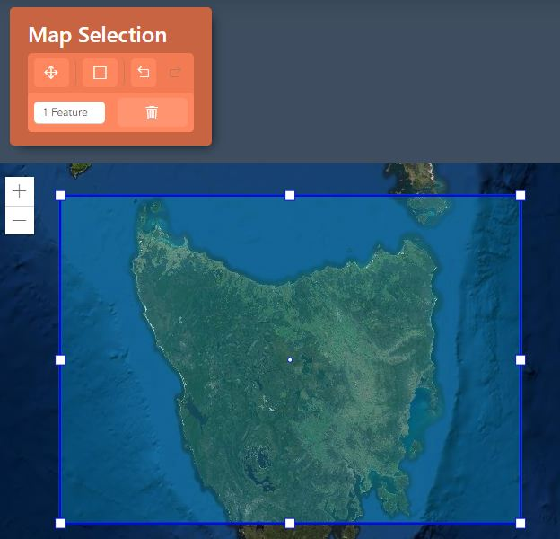
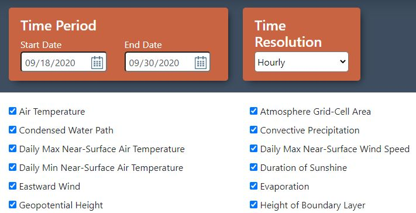
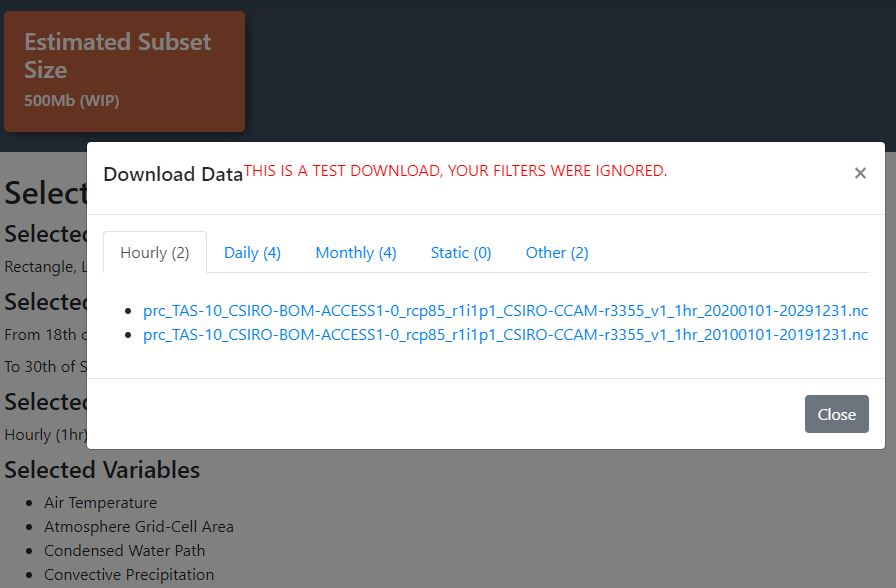

Introduction of the interface of the application.
This area contains the section where you can proceed your location selection for data extraction. It contains a map API from ArcGIS and functionality the team implements to help you choose area of your choice, either by square or importing a shapefile.
After having chosen your desired location for data extraction, you can then proceed to choose time period and variables. Time period contains a timespan of 2 checkpoint. There are over a hundred variables to choose from so you can use the search functionality to search for your desired variables.
This area contains the information about your downloads. It sums up your chosen area by geographical degree, the timespan and the estimated download.
